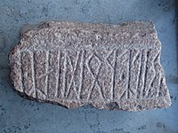

Lasagna
By Odin's Lasagna!

I stole this recipe from some grave robber calling himself Indiana Jones.
I heard that wasn't even his real name, that 'Indiana' was his dog's name!
From what I've heard, he's probably just tryig to avoid overdue child support payments.
But, I digress.
Just to warn you. The first time I made this, my house was truck by lightning several times!
So be careful, and do NOT read any of this out-loud.
Ingredients
- ¾ pound lean ground beef
- ½ cup minced onion
- 2 cloves garlic, crushed
- 1 (28 ounce) can crushed tomatoes
- 2 (6 ounce) cans tomato paste
- 2 (6.5 ounce) cans canned tomato sauce
- ½ cup water
- 2 tablespoons white sugar
- 1 ½ teaspoons dried basil leaves
- ½ teaspoon fennel seeds
- 1 teaspoon Italian seasoning
- 1 ½ teaspoons salt, divided, or to taste
- ¼ teaspoon ground black pepper
- 4 tablespoons chopped fresh parsley
- 12 lasagna noodles
- 16 ounces ricotta cheese
- 1 egg
- ¾ pound mozzarella cheese, sliced
- ¾ cup grated Parmesan cheese
Steps
- In a Dutch oven, cook sausage, ground beef, onion, and garlic over medium heat until well browned. Stir in crushed tomatoes, tomato paste, tomato sauce, and water. Season with sugar, basil, fennel seeds, Italian seasoning, 1 teaspoon salt, pepper, and 2 tablespoons parsley. Simmer, covered, for about 1 1/2 hours, stirring occasionally.
- Bring a large pot of lightly salted water to a boil. Cook lasagna noodles in boiling water for 8 to 10 minutes. Drain noodles, and rinse with cold water. In a mixing bowl, combine ricotta cheese with egg, remaining parsley, and 1/2 teaspoon salt.
- Preheat oven to 375 degrees F (190 degrees C).
- To assemble, spread 1 1/2 cups of meat sauce in the bottom of a 9x13-inch baking dish. Arrange 6 noodles lengthwise over meat sauce. Spread with one half of the ricotta cheese mixture. Top with a third of mozzarella cheese slices. Spoon 1 1/2 cups meat sauce over mozzarella, and sprinkle with 1/4 cup Parmesan cheese. Repeat layers, and top with remaining mozzarella and Parmesan cheese. Cover with foil: to prevent sticking, either spray foil with cooking spray, or make sure the foil does not touch the cheese.
- Bake in preheated oven for 25 minutes. Remove foil, and bake an additional 25 minutes. Cool for 15 minutes before serving.
Borrowed from
Worlds Best Lasagna
without permission, consent, well wishes or distant relatives.